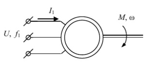
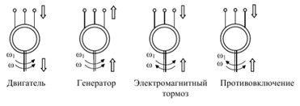

Асинхронный серводвигатель (сервомотор). Частотное управление
Данный вид двигателей широко известен своей технологичностью и непритязательностью к условиям работы, что важно для условий промышленного производства со всеми его особенностями. Небольшая масса, скромные габариты и привлекательная себестоимость, лёгкость обслуживания выгодно выделяют его среди другого электрооборудования. Хотя в 90-е годы началась активная замена синхронными серводвигателями, но асинхронный тип по-прежнему занимает свою долю на предприятиях и массово используется в промышленности. 
На рисунке схематичное изображение асинхронного двигателя.
Асинхронный двигатель с точки зрения математики
Полное описание нелинейной системы с элементами, которые взаимно перемещаются выходит довольно объемным. Физические явления кажутся простыми, напряжения, токи и потокосцепления являются изменяемыми векторными характеристиками. Это частота, фаза и амплитуда. Изучает работу такого оборудования теория электрических машин.
Асинхронные машины обладают заметной нелинейностью. Магнитный поток связан с намагничивающим током. Из-за переменного насыщения магнитной цепи сопротивления роторной цепи определяются частотой и температурой.
Для определения нагрузки асинхронного электродвигателя, в частном случае серводвигателя, нужно кроме сопротивлений схемы замещения знать и другие переменные, а именно частоты, напряжения и скольжения.
Для расчета и дальнейшего изучения и прогнозирования режима работы такого оборудования и электроприводов на этой базе требуется знать математическое выражения зависимостей скольжения от внутренних параметров и режимов его работы.
Тормозные режимы работы
При частотно-управляемом торможении – этот режим работы не уступает по важности двигательному. Возможно использование механики, тем не менее, частотное управление даёт возможность производить торможение привода за счёт электричества. Что в значительной степени выгоднее.
Асинхронный серводвигатель можно использовать в режиме двигателя и в 3-х режимах торможения, которые различаются направлением потоков энергии.
В режиме двигателя мощность передаётся от источника электроэнергии на вал двигателя. Магнитное поле вращается, дублируя направление, что и вал машины. Скорость вращения вала меньше скорости вращения поля.
Как регулировать напряжение.
Для управления асинхронными электродвигателями, регулировку напряжения статора в чистом виде не производят. Напряжение статора меняют вместе с частотой напряжения подаваемого на статор. Основные виды характеристик U/F и U/F2. Вид характеристики, по которой будет управляться двигатель, выбираются в преобразователе частоты или сервоприводе.
Для формирования синусоидального тока статора обычно используются векторный и скалярный способы формирования напряжения. Наиболее выгодным оказывается векторный режим, который позволяет создать б`ольшую амплитуду выходного напряжения, чем скалярный.
Когда мы управляем напряжением статора, то управляем скорее не крутящим моментом, а больше статическим запасом крутящего момента.